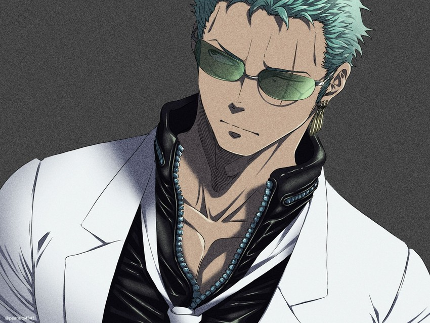
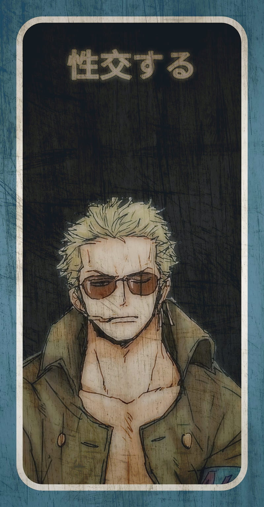
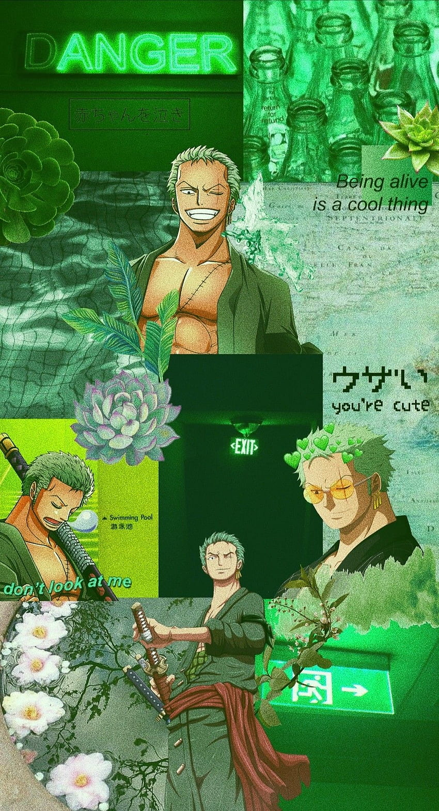
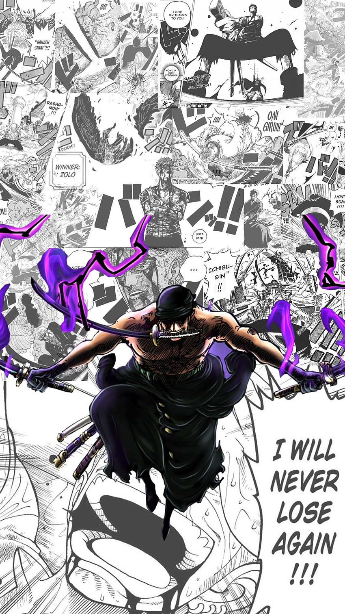
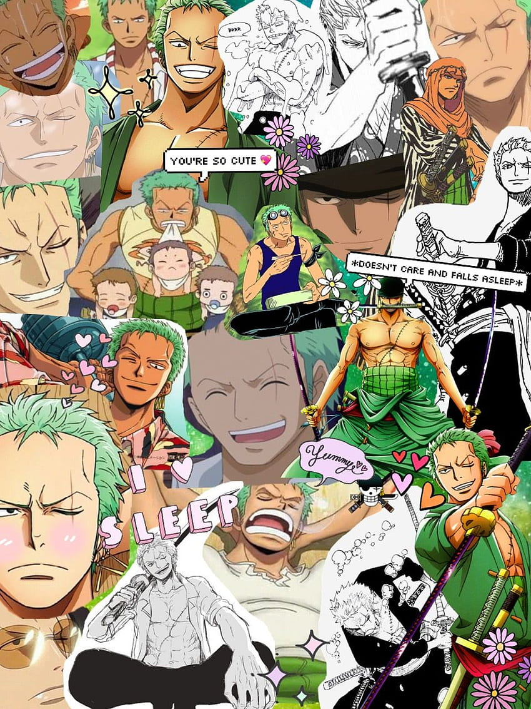
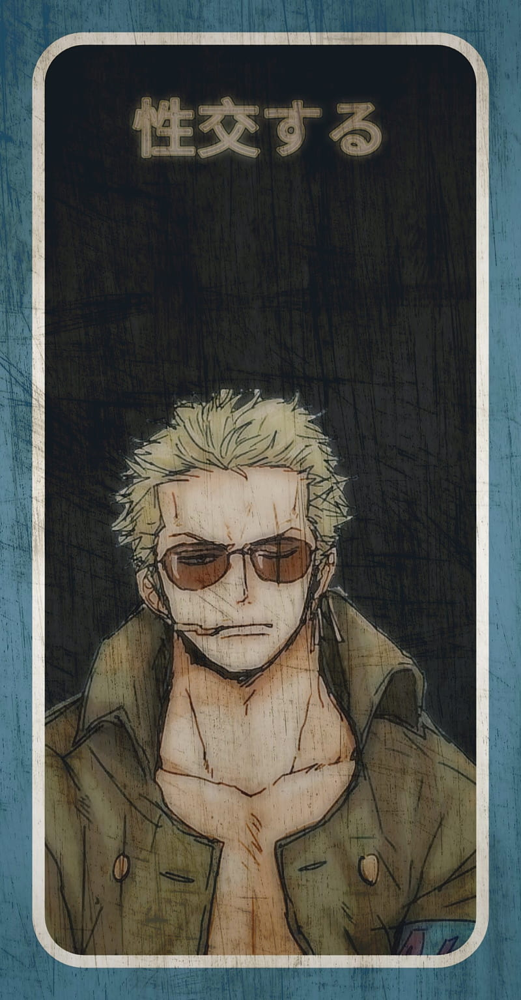
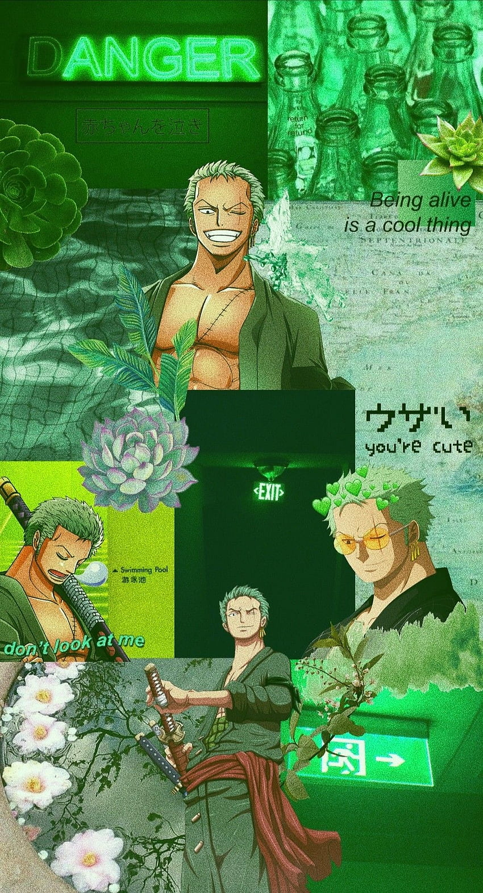
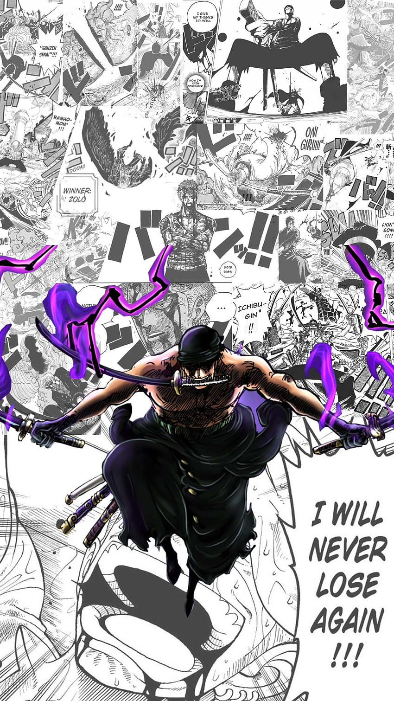
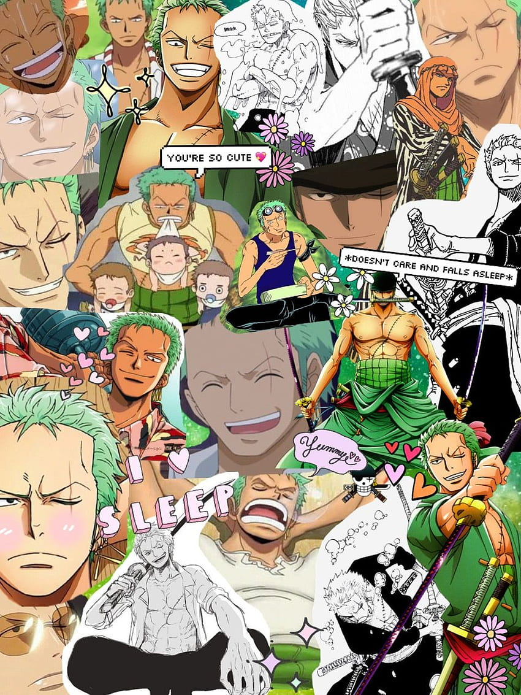

Roronoa Zoro
Vice Captain Of Straw Hat Pirates
Former Pirate Hunter
About Me

Roronoa Zoro
Vice Captain Of Straw Hat Pirates
Roronoa Zoro, also known as "Pirate Hunter" Zoro, is a main combatant of the Straw Hat Pirates, one of their two swordsmen, one of the Senior Officers of the Straw Hat Grand Fleet, and is publicly recognized as the right-hand man of his crew's captain Monkey D. Luffy. Formerly a bounty hunter, he is the second member of Luffy's crew and the first to join it, doing so in the Romance Dawn Arc. Born in the East Blue, Zoro is the son of Tera and Roronoa Arashi, the grandson of Shimotsuki Furiko and Roronoa Pinzoro, and the grandnephew of Shimotsuki Ushimaru, making him a matrilineal descendant of both the Shimotsuki Family of Wano Country and the legendary samurai, Shimotsuki Ryuma. As a master of Three Sword Style, a swordsmanship style which he created during his childhood training in Shimotsuki Village, Zoro is one of the three most powerful combatants of the Straw Hats, alongside Luffy and Sanji, who are referred to as the "Monster Trio". His dream is to become the greatest swordsman in the world, in order to honor a promise he made to his deceased childhood friend Kuina.
Gallery

 







Education
-
Self-taught Swordsman:
Zoro initially trained himself in swordsmanship, honing his Education through countless battles and encounters.
-
Training with Kuina:
Zoro trained alongside Kuina, a skilled swordsman, before her untimely passing. Their intense rivalry and shared ambition to become the world's greatest swordsman pushed Zoro to new heights.
-
Training under Koshiro:
After Kuina's death, Zoro sought training under Kuina's father, Koshiro, a renowned swordsman. Koshiro further refined Zoro's techniques and instilled in him a strong sense of discipline.
-
Training with Mihawk:
Zoro's most significant training came under the tutelage of Dracule Mihawk, the world's strongest swordsmen. Zoro endured intense training sessions with Mihawk, pushing himself to the limits to become stronger.
Contact Me
If you have any questions or would like to get in touch, feel free to email me at 2001pulkit@gmail.com.